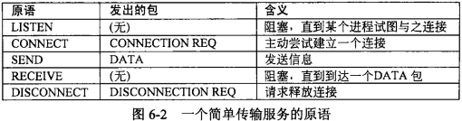
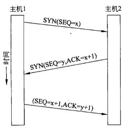
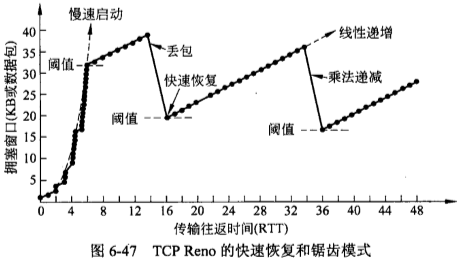
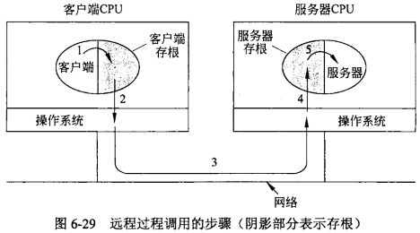
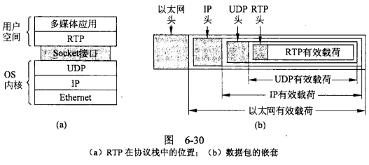

有了MAC地址和IP地址，我们已经可以在互联网上任意两台主机上建立通信。
接下来的问题是，同一台主机上有许多程序都需要用到网络，比如，你一边浏览网页，一边与朋友在线聊天。当一个数据包从互联网上发来的时候，你怎么知道，它是表示网页的内容，还是表示在线聊天的内容？
也就是说，我们还需要一个参数，表示这个数据包到底供哪个程序（进程）使用。这个参数就叫做”端口”（port），它其实是每一个使用网卡的程序的编号。每个数据包都发到主机的特定端口，所以不同的程序就能取到自己所需要的数据。
“端口”是0到65535之间的一个整数，正好16个二进制位。0到1023的端口被系统占用，用户只能选用大于1023的端口。不管是浏览网页还是在线聊天，应用程序会随机选用一个端口，然后与服务器的相应端口联系。
“传输层”的功能，就是建立”端口到端口”的通信。相比之下，”网络层”的功能是建立”主机到主机”的通信。只要确定主机和端口，我们就能实现程序之间的交流。因此，Unix系统就把主机+端口，叫做”套接字”（Socket）。有了它，就可以进行网络应用程序开发了。
传输层有两个主要协议。无连接协议UDP 和 面向连接协议TCP
一、TCP(Transmisson Control Protocol, 传输控制协议)
TCP提供了可靠地端到端传输字节流，不支持组播或广播。它建立连接，并通过重传机制增加了可靠性，同时还进行流量控制和拥塞控制，代表使用它的应用程序做了所有的一切。
TCP建立连接关联端口时，不是让FTP守护进程关联21号端口，让SSH守护进程关联22号端口，因为这样会使内存散乱在这些守护进程中且大多数时间这些进程都是空闲的。而是会让一个特殊的守护进程(在UNIX中称为inetd, Internet daemon)同时关联到多个端口上，然后等待针对这些端口的第一个入境连接，当休闲一个入境连接请求时，inetd就派生出一个新的进程调用适当的守护进程。然后由这个守护进程来处理连接请求。按照这种方式，除了inetd，其他所有守护进程都只在确实有工作需要它们做时才被真正激活。
1.1 TCP头

1.2 Socket
传输层一般实现在主机的不同位置，可能在操作系统内核，或者以一个链接库的形式绑定到网络应用中，或者以一个独立的用户进程运行。为了允许用户访问传输服务，传输层必须为应用程序提供传输服务接口，应用程序员可以按照一组标准的 原语(Primitive) 来编写代码。
Socket是对TCP/IP协议的封装，本身并不是协议，而是一个调用接口(API)，为方便开发而产生。



1.3 三次握手和四次挥手
TCP使用 三次握手(three-way handshake) 来建立连接。第一次握手：客户端发送 SYN(Synchronize Sequence Numbers, 同步序列编号) 包（SEQ=x）到服务器，等待服务器确认；第二次握手：服务器收到SYN包，必须确认客户的SYN（ACK=x+1）(ACK, Acknowledge)，同时自己也发送一个SYN包（SEQ=y）；第三次握手：客户端收到服务器的SEQ+ACK包，向服务器发送确认包ACK(ACK=y+1）和自己的序号包（SEQ=x+1），此包发送完毕，客户端和服务器进入ESTABLISHED（TCP连接成功）状态，完成三次握手。

释放连接时使用 四次挥手。由于TCP连接是全双工的，因此每个方向都必须单独进行关闭。这原则是当一方完成它的数据发送任务后就能发送一个FIN来终止这个方向的连接。收到一个 FIN只意味着这一方向上没有数据流动，一个TCP连接在收到一个FIN后仍能发送数据。首先进行关闭的一方将执行主动关闭，而另一方执行被动关闭。（1） TCP客户端发送一个FIN，用来关闭客户到服务器的数据传送。（2） 服务器收到这个FIN，它发回一个ACK，确认序号为收到的序号加1。和SYN一样，一个FIN将占用一个序号。（3） 服务器关闭客户端的连接，发送一个FIN给客户端。（4） 客户端发回ACK报文确认，并将确认序号设置为收到序号加1。

1.4 滑动窗口(Slide Window)

ACK表示允许发送方下次发送的序号，WIN表示接收端还剩多大缓冲区。滑动窗口使用序号来防止数据包重复，使用计时器来防止丢包，数据没有到达接收端。
为了避免发送方多次发送小数据包增加网络负载，Nagle算法：当应用层数据每次以很少量方式进入到发送端时，只发送第一次的数据，然后将其余后面的字节缓冲起来，直到发送出去的那个数据包被确认，才将缓冲的字节放在一个TCP段中发送出去，并且继续缓冲字节，直到下一个段被确认，它试图解决由于发送端每次向TCP传递一个字节而引起的问题。如果应用程序希望数据立即被发送出去，如玩实时互动游戏，就可以设置TCP上的PUSH标志位，例如Windows和Linux的TCP_NODELAY。
为了避免接收方只有小字节的窗口更新大小，Clark算法：禁止接收端发送只有1个字节的窗口更新段，强制接收端必须等待一段时间，直到可以发送一个满段，或者至少包含接收端缓冲区一半大小的段。它试图解决由于接收端每次从TCP流中读取一个字节而引起的问题。这两种算法相互补充，发送端的目标是不发送太小的数据段，接收端也不要请求太小的段。
1.5 慢启动(Slow Start)
服务器发送数据包，当然越快越好，最好一次性全发出去。但是，发得太快，就有可能丢包。带宽小、路由器过热、缓存溢出等许多因素都会导致丢包。线路不好的话，发得越快，丢得越多。
最理想的状态是，在线路允许的情况下，达到最高速率。但是我们怎么知道，对方线路的理想速率是多少呢？答案就是慢慢试。
TCP 协议为了做到效率与可靠性的统一，设计了一个 慢启动机制。开始的时候，发送得较慢，然后根据丢包的情况，调整速率：如果不丢包，就加快发送速度；如果丢包，就降低发送速度。
Linux 内核里面设定了（常量TCP_INIT_CWND），刚开始通信的时候，发送方一次性发送10个数据包，即”发送窗口”的大小为10。然后停下来，等待接收方的确认，再继续发送。每次经过一个往返时间确认成功，发送窗口就增加一倍，这样发送的字节就会成指数增长。默认情况下，接收方每收到两个 TCP 数据包，就要发送一个确认消息ACK。
ACK携带两个信息：
- 期待要收到下一个数据包的编号
- 接收方的接收窗口的剩余容量
由于慢启动导致发送窗口按指数增长，很快就将太多的数据包发到网络。每当检测到网络拥塞丢包，发送端维护的 慢启动阈值(Slow Start Threshold) 和发送窗口都设置为当前窗口的一半，然后TCP就从指数增长切换为线性增加(即加法增加)，这样当前连接的发生窗口会遵循一种锯齿模式。

重复确认(Duplicate Acknowledgement)：每一个数据包都带有下一个数据包的编号。如果下一个数据包没有收到，那么 ACK 的编号就不会发生变化。当丢失数据包的后续数据包到达接收端时，接收端会发送携带相同确认号的确认段，即重复确认。如果发送方发现收到三个连续的重复 ACK，或者超时了还没有收到任何 ACK，就会确认丢了那个具体序号的包。
二、UDP(User Datagram Protocol, 用户数据报协议)
它除了给应用程序提供发送数据包功能并允许它们在所需的层次之上架构自己的协议之外，几乎没有做什么特别的事情。由于UDP是传输层协议，通常运行在操作系统中，而使用UDP的协议通常运行在用户空间，因而可以把对UDP的使用视为应用程序。
UDP经常用在 客户机-服务器 应用开发，其中一个应用是 域名系统(DNS, Domain Name System)。
2.1 RPC(Remote Proceduce Call, 远程过程调用)
向一台远程主机发送消息并获得应答，就如同在编程语言中执行函数调用一样，都是提供参数获得结果而不关心内部细节。例如调用 get_IP_address(host_name)函数，它的工作方式是向DNS服务器发送一个UDP数据包，然后等待应答，如果应答速度不够快，则超时并重试。
当客户机上的进程调用服务器上的一个过程时，客户机上的调用进行被挂起，而服务器上的被调用过程则开始执行，信息以参数的形式从调用方传输到被调用方，过程的执行结果则从反方向传递过来，应用程序员看不到任何消息的传递。RPC的思想是尽可能地使一个远程过程调用看起来像本地过程调用一样。
在使用RPC的最简单形式中，客户程序必须绑定链接到一个称为 客户存根(Client Stub) 的库过程，代表了客户地址中的服务器过程，类似地，服务器需要绑定链接到一个称为 服务器存根(Server Stub) 的过程。第1步是客户机 函数调用 客户存根；第2步，客户存根 封装参数(列集, marshalling) 到消息中；第3步， 操作系统将该消息从客户机 发送 到服务器上；第4步，操作系统将入境数据包 传递 给服务器存根；第5步，服务器 解封参数(散集, unmarshaled) ，函数调用服务器过程。

因客户存根与服务器过程有同样的名字，故网络通信是通过仿造一个普通的过程调用来完成。
存在的一些问题：因客户机和服务器位于不同的地址空间中，对于RPC，传递指针是不可能的，实际上整个过程相当于用 复制值-恢复调用(call-by-copy-restore) 代替了 引用调用(call-by-reference)；在一些弱类型的语言中(比如C)，有时在列集时无法确定参数的长度，在散集时不总能推断出参数的类型；全局变量无法为双方共享。故在实际运用中，需要一些限制才能保证它正常工作。
既然有http 请求，为什么还要用rpc调用？
RPC调用是面向服务的封装，不仅高效安全，更提供了服务治理、负载均衡等高级服务。
2.2 RTP(Real-time Transport Protocol, 实时传输协议)
UDP的另一个应用领域是实时多媒体应用，比如现在很火的直播。

实时传输协议通常运行在用户空间，位于UDP之上。基本功能是将几个实时数据流复用到一个UDP数据包流中。
三、总结
传输层主要分为无连接的UDP协议和面向连接的TCP协议，主要功能是区分不同服务，建立起端到端的连接。
参考链接：《计算机网络（第5版）》 AndrewS．Tanenbaum
TCP 协议简介
互联网协议入门（一）
互联网协议入门（二）